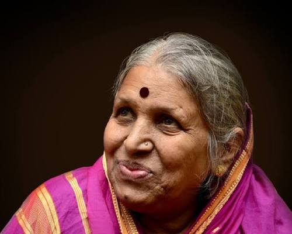

Sindhutai Sapkal was born on 14 November 1948,in Pipri Meghe
in Wardha district in the then Central Provinces and Berar of Dominion of
India to Abhimanyu Sathe, a cowherder.
Being an unwanted child,
she was referred to as Chindhi (Marathi for "piece of rag").
Abject poverty, family responsibilities and childhood marriage to an older
man forced her to quit formal education after she successfully passed her
fourth standard. Sapkal was married off at age 12 to Shrihari Sapkal, who
was 20 years older than her, and moved to Nawargaon, Seloo in Wardha. The
marriage did not last long and at the age of 20, she was violently forced
out of her home by her husband, leaving her on her own to care for a
daughter.Sindhutai Sapkal later found herself in Chikhaldara, where she
started begging for food.
In the process, she realised that there were many children abandoned by
their parents and she adopted them as her own. She had to beg even harder
to feed the ever larger family.
She decided to become a mother to
everyone who came across to her as an orphan. She later gave away her own
daughter to the Shrimant Dagdu Sheth Halwai trust of Pune, to eliminate
the feeling of partiality between her own child and the adopted children
# 2021 - Global International Women's Day Award by.
# 2021 - Padma Shri in the Social Work category.
# 2016 – Honorary doctorate by the Dr. D. Y. Patil
College of Engineering.
# 2016 – Social Worker of the Year award from Wockhardt
Foundation.
# 2013 – The National Award for Iconic Mother